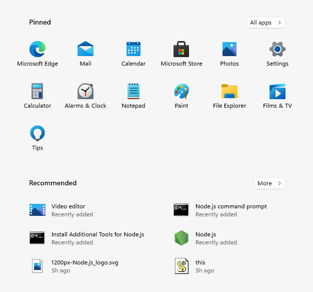

<!DOCTYPE html>
<html lang="en">

<head>
    <meta charset="UTF-8">
    <meta http-equiv="X-UA-Compatible" content="IE=edge">
    <meta name="viewport" content="width=device-width, initial-scale=1.0">
    <link rel="icon" href="favicon.ico">
    <link rel="stylesheet" href="style.css">

    <title>Windows 11</title>
</head>

<body>

</body>

</html>

<body>
    <!-- <div class="icons">
        
        <div>Google Chrome</div>
    </div> -->
    <!-- <video autoplay muted id="vid">
        <source src="/videos/video.webm" type="video/webm">
    </video> -->
    <div class="startIcons">

        
    </div>

    <div class="startMenue">
        
    </div>

    <div class="searchBar">
        <form onsubmit="declare()">
            <input type="text" name="" id="" placeholder="Type here to search">
            

        </form>
    </div>
    <!-- <div class="taskbar">
        
        
    </div>
    <div class="startmenu">
        
    </div> -->


    <script src="https://ajax.googleapis.com/ajax/libs/jquery/3.4.1/jquery.min.js"></script>

    <script src="script.js"></script>

</body>


</html>
